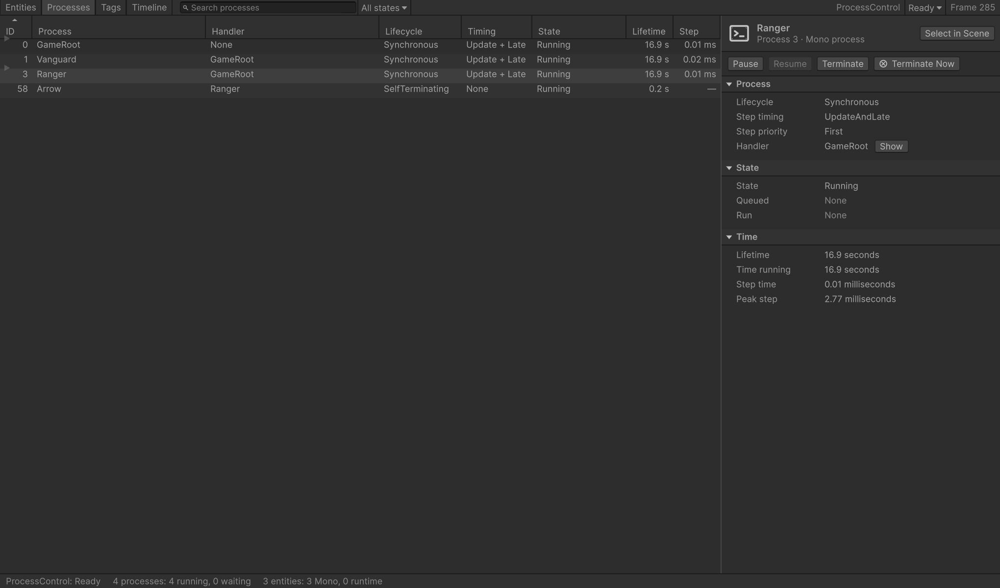

Processes
Processes lists every process ProcessControl holds. Each column sorts.

The Debugger's Processes view, a process selected.
| Column | Shows |
|---|---|
| ID | Its ID. |
| Process | Its name. |
| Handler | Its handler. |
| Lifecycle | Its lifecycle. |
| Timing | The update loops it steps in. |
| State | Its state, with the state it moves to next where something has asked, such as "Running → Terminated". |
| Lifetime | Its lifetime. |
| Step | Its average time a step, over the last second. |
The toolbar's filter shows All states, Running or Waiting. Its ProcessControl menu sets ProcessControl's own state, from Ready to Terminated Immediately.
The process's detail
The detail names the process, its ID, and whether it's a Mono or a Runtime process. A Mono one has Select in Scene.
| Button | What it does |
|---|---|
| Pause | Pauses it, and the processes it handles. |
| Resume | Resumes it, and the processes it handles. |
| Terminate | Ends it, and the processes it handles, as its lifecycle allows. |
| Terminate Now | Ends it, and the processes it handles, at once. |
Its sections say how it runs:
| Section | Shows |
|---|---|
| Process | Its lifecycle, step timing, step priority and handler, with Show, which selects the handler's process in the list. |
| State | Its state, the state it's queued to move to, and its Run. |
| Time | Its lifetime, its time running, its step time and its peak step. |
A Run is going, held by a pause, not started, cancelled, or ended. Once it's cancelled, Resume starts a new one. Processes covers processes.